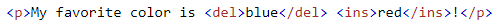

Cada uma é definida pelos comandos: <td> e </td>. Tudo entre isso é o conteúdo da célula da tabela. Ex:

HTML Table: Define uma tabela HTML que consiste em células de tabela dentro de linhas e colunas.
Cada uma é definida pelos comandos: <td> e </td>. Tudo entre isso é o conteúdo da célula da tabela. Ex:
Del: A <del>tag define o texto que foi excluído de um documento. Os navegadores geralmente riscarão uma linha no texto excluído.
Já o ins é a tag que marca o texto inserido. Ex:

Sub: A <sub>tag define o texto subscrito. O texto subscrito aparece meio caractere abaixo da linha normal e, às vezes, é renderizado em uma fonte menor. O texto subscrito pode ser usado para fórmulas químicas. Por exemplo: H2O
Sup: A <sup>tag define o texto sobrescrito. O texto sobrescrito aparece com meio caractere acima da linha normal e, às vezes, é renderizado em uma fonte menor. Texto sobrescrito pode ser usado para notas de rodapé. Por exemplo: 72
Blockquote: A <blockquote>tag especifica uma seção citada de outra fonte. Os navegadores geralmente recuam os blockquotes.
Q: Já a <q>tag define uma pequena citação. Os navegadores normalmente inserem aspas entre aspas.
Abbr: A <abbr>tag define uma abreviatura ou acrônimo, como "HTML", "CSS", "Sr.", "Dr.", "ASAP", "ATM".
Address: A <address>tag define as informações de contato do autor/proprietário de um documento ou artigo. As informações de contato podem ser um endereço de e-mail, URL, endereço físico, número de telefone, identificador de mídia social, etc. O texto no address geralmente é renderizado em itálico e os navegadores sempre adicionarão uma quebra de linha antes e depois do comando address.
Cite: A <cite>tag define o título de um trabalho criativo (por exemplo, um livro, um poema, uma música, um filme, uma pintura, uma escultura, etc.). perceba que o nome de uma pessoa não é o título de uma obra. O texto no comando cite geralmente é processado em itálico .
BDO: BDO significa substituição bidirecional. A <bdo>tag é usada para substituir a direção do texto atual.
Code: A <code>tag é usada para definir um pedaço de código de computador. O conteúdo interno é exibido na fonte monoespaçada padrão do navegador.
Esta tag não está obsoleta. No entanto, é possível obter um efeito mais rico usando CSS.
Pre: A <pre>tag define o texto pré-formatado. O texto que é usado em um comando pre é exibido em uma fonte de largura fixa e preserva os espaços e as quebras de linha. O texto será exibido exatamente como escrito no código-fonte HTML.
KBD: A <kbd>tag é usada para definir a entrada do teclado. O conteúdo interno é exibido na fonte monoespaçada padrão do navegador.